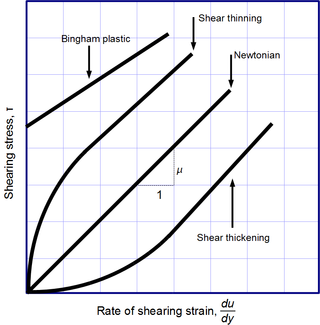

Table of contents |
|---|
| Abstract |
| Fluids |
| External Solvent |
| Temperature |
| References |
This paper aims to investigate the profound impact of fluid viscosity on the flow behaviour of crude oil in pipelines. It will also discuss what viscosity is and how to reduce it in crude oil transportation. Transportation of crude oil through pipes is used often and over a great distance and requires a lot of energy. It will also talk about how temperature and external solvents affect viscosity and how it can be reduced.
On average about 4141 metric tons (MT) of crude oil are produced yearly and about 30 % of the world's energy is dependent on crude oil (IEA , 2021), which reinforces the fact that crude oil is a necessity for our survival as humans on this planet. Different countries around the world import and export oil and gas, and the transportation of such products must be as efficient as possible to ensure seamless movement. With that, I will be looking at the most limiting factor viscosity, in transporting crude oil.
Viscosity is defined as the resistance of fluids to change in shape or movement of neighbouring portions relative to one another (Britannica, 2023). In simpler terms, it measures how “thick” or “sticky” a fluid s as it flows from a one container to another. It is a result of the intermolecular forces between particles within the fluid. Which is as a result of internal friction caused molecules of oppose velocity (Britannica, 2023). Viscosity a major factor when considering the amount of energy needed to pump crude from one point to the other. Viscosity can affect both the air and fluids but for this paper I will only cover its effects on fluids. Fluid can exist in two forms namely Newtonian fluids and non-Newtonian fluids.This refers to the elasticity of the fluid. It is a fluid in which the viscous stresses arising from its flow are at every point linearly correlated to the local strain rate. What this means that if the rate at which a fluid deforms (shear rate) is proportional to shear stress then it is a Newtonian Fluid. This is important because it means that its viscosity is constant regardless of the pipe or channel it flows through. Example of Newtonian Fluid include water and organic solvent. The equation of Newtonian fluids is Shear Stress = Viscosity * Shear Rate
A non-Newtonian fluid is a fluid that does not follow Newton's law of viscosity (Stem Mayhem, 2019), that is, it has variable viscosity dependent on stress. Most of our fluids belong to this category e.g., Ketchup, Blood, Cream and Crude oil. There are different types of non-Newtonian fluid behaviour: Shear thickening. Apparent Viscosity increases with increased stress (Paul N. Garay,1996). This means that by increasing the shear (force) applied to the fluid the viscosity is increased making it near solid on impact e.g., Shear-thinning. Apparent Viscosity decreases with increased stress (M.A. Rao, 2007). This means by increasing the shear (force) applied to the fluid the viscosity is decreased e.g., ketchup.
Crude oil is a highly viscous fluid (non-Newtonian) and because of this, it means that a lot of energy is needed to pump crude oil from one place to another efficiently without wasting energy. There are many methods like increasing or decreasing the temperature of the crude oil and adding external solvent into the mix to help reduce the viscosity which in turn saves mass amount of energy when pumping.
External Solvent can be added to affect the viscosity most light oil mixture. Since viscosity is caused by internal friction on molecules solvent such as alcohol are used because it can also affect molecular bond like hydrogen bonds due to the interactions generated by the hydrogen bonds of the hydroxyl groups with the asphaltenes. High polarity or high degree of hydrogen bonding of the solvent produces greater reduction of the viscosity of crude oil. (Santos, I.C.V.M., 2017) To maximum it effects only polar molecules with the least hydrogen bonds has the best effect. Most Solvent are mixed on a 20-30% is often sufficient to avoid high-pressure drops or the need for high temperatures (Santos, I.C.V.M. ,2017). This avoids complication in pipes later.
Increase the temperature is known to reduce the viscosity of fluids.it achieve this by Increasing the temperature causing the value of the kinematic viscosity for the crude oil to decrease rapidly (Ramzy S. Hamied, et al. ,2023).The main problem with heating is the pipe has to be insulated and lots of heating terminal has to be built to keep the pipes at the right temperature.
In Summary, this paper has shed light on viscosity which is found in all fluids from blood to crude oil. I talked about how fluids are group into two Netoinan and non-Newtonian fluids. Newtonian fluids are fluids in which shear stress is directly proportional to viscosity but in non-Newtonian fluids Shear stress is directly proportional to viscosity. I also looked at how to reduces viscosity of the non-Newtonian fluid Crude oil. I went in dept looking at how high temperatures affect viscosity and how add External Solvent can also help to reduces it viscosity.